19
深度卷积网络
在这一章中，我们继续我们对深度学习世界的务实探索，分析深度卷积网络。深度卷积网络代表了几乎用于任何目的的最精确和性能最好的视觉处理技术。得益于这种网络的表达能力，像在实时图像识别、自动驾驶汽车和深度强化学习等领域获得的结果已经成为可能。将这种技术与前面章节中讨论的所有元素结合使用，可以在视频处理、解码、分割和生成领域取得非凡的成果。
特别是，在本章中，我们将讨论以下主题:
- 深度卷积网络
- 回旋，黑暗回旋
- 可分离卷积和转置卷积
- 池和其他支持层
此时，我们可以开始讨论深度卷积网络的基本概念，试图理解为什么这种算子在解决视觉检测任务方面如此有帮助。
深度卷积网络
在前一章中，我们看到了当处理一个并不复杂的图像数据集时，例如MNIST手写数字数据集，多层感知器如何能够实现非常高的精度。然而，由于完全连接的层是水平的，通常为三维结构(宽度 x 高度 x 通道)的图像必须被展平并转换成一维阵列，在一维阵列中几何属性肯定会丢失。
对于更复杂的数据集，类之间的区别取决于细节和它们之间的关系，这种方法可以产生中等精度，但它永远无法达到生产就绪应用程序所需的精度。
神经科学研究和图像处理技术的结合建议对神经网络进行实验，其中第一层与二维结构(没有通道)一起工作，试图提取严格依赖于图像几何属性的特征层次。事实上，正如关于视觉皮层的神经科学研究所证实的，人类不会直接解码图像。该过程是连续的，并且从检测诸如线和方向的低级元素开始；逐步地，它通过关注定义越来越复杂的形状、不同颜色、结构特征等的子属性来继续，直到信息量足以解决任何可能的模糊性(关于进一步的科学细节，我推荐Stone J. V .，Vision and Brain:How We percept The World，麻省理工学院出版社，2012)。
例如，我们可以将眼睛的解码过程想象为由这些过滤器组成的序列(当然，这只是一个说教的例子):方向(占优势的水平维度)，椭球形内部的中心圆，较暗的中心(瞳孔)和清晰的背景(灯泡)，瞳孔中间较小的较暗的圆，眉毛的存在，等等。即使该过程在生物学上是不正确的，它也可以被认为是一个合理的分级过程，其中在较低级别的过滤之后获得了较高级别的子特征。
这种方法已经使用二维卷积算子进行了综合，二维卷积算子已经被认为是一种强大的图像处理工具。然而，在这种情况下，有一个非常重要的区别:滤波器的结构不是预先强加的，而是由网络使用与MLP相同的反向传播算法学习的。通过这种方式，模型可以根据最终目标(即分类输出)来调整权重，而无需考虑任何预处理步骤。事实上，深度卷积网络，而不仅仅是MLP，是基于端到端学习的概念，这是一种不同的方式来表达我们之前描述的内容。
输入是来源；在中间，有一个灵活的结构。最后，我们定义了一个全局代价函数，来衡量分类的准确性。学习过程必须反向传播误差并校正权重以达到特定目标，但我们不知道这个过程是如何工作的。我们可以很容易地在学习阶段结束时分析过滤器的结构，发现网络已经将第一层专门化为低级细节(如方向)，最后一层专门化为高级，有时是可识别的细节(如面部的组成部分)。
毫不奇怪，这种模型在图像识别、分割(检测组成图像的不同部分的边界)和跟踪(检测移动对象的位置)等任务中实现了最先进的性能。尽管如此，深度卷积网络已经成为许多不同架构(如深度强化学习或神经类型转移)的第一块，即使有一些已知的限制，仍然是解决一些复杂现实问题的首选。这种模型的主要缺点(这也是一个常见的异议)是它们需要非常大的数据集才能达到高精度。所有最重要的模型都是用数百万幅图像训练的，它们的泛化能力(即主要目标)与不同数据点的数量成正比。
有研究人员注意到，人类在没有大量经验的情况下也能学会归纳，而且在未来几十年，我们很可能会看到这种观点的进步。然而，深度卷积网络已经彻底改变了许多人工智能领域，使得仅仅几年前还被认为几乎不可能的结果成为可能。
在本节中，我们将讨论不同种类的卷积，以及如何使用TensorFlow和Keras实现它们；所以，对于具体的技术细节，我继续建议你查阅官方文档和书籍Holdroyd T .， TensorFlow 2.0快速入门指南，Packt出版，2019。
卷积运算符
即使我们只处理有限和离散的卷积，开始提供基于可积函数的标准定义也是有用的。为简单起见，我们假设 f ( t ) 和 k ( t )是在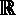中有支撑的单变量的两个实函数。我们称之为内核的 f ( t )和 k ( t )(习惯上表示为f(t)*k(t)的卷积定义如下:
如果没有数学背景，这个表达式可能不太容易理解，但是只要稍加考虑，它就会变得非常简单。首先，积分对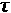的所有值求和；因此，卷积是剩余变量 t 的函数。第二个基本元素是一种动态属性:内核被反转(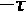)并转换成一个新变量的函数，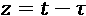。没有很深的数学知识，也可以理解这个运算是沿着(自变量)轴移动函数。
在下图中，有一个基于抛物线的示例:
移位卷积二次核的例子
第一张图是原始内核(也是对称的)。另外两个图分别显示了向前和向后的移动。现在应该更清楚了，卷积将函数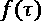乘以移动后的内核，并计算结果曲线下的面积。由于变量t没有积分，面积是 t 的函数，定义了一个新函数，这个新函数就是卷积本身。换句话说，为 t = 5计算出的 f ( t )和 k ( t )的卷积值，就是乘法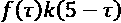得到的曲线下面积(当然要积分出来的变量是)。根据定义，卷积是:
- 可交换的(f*k=k*f)
- 分配的(f*(k+g)=(f*k)+(f*g))
- 而且，还可以证明它也是结合的(f*(k*g)=(f*k)*g))
然而，在深度学习中，我们从不与连续卷积一起工作；因此，我省略了所有的属性和数学细节，将注意力集中在离散的情况。对该理论感兴趣的读者可以在麻省理工学院出版社Siebert w . m .电路、信号和系统中找到更多细节。相反，一种常见的做法是堆叠具有不同内核(通常称为滤波器)的多个卷积，以将包含 n 个通道的输入转换为具有 m 个通道的输出，其中m对应于内核的数量。
由于不同输出的协同作用，这种方法允许释放卷积的全部能量。按照惯例，具有n个滤波器的卷积层的输出被称为特征图(w(t)xh(t)xn)，因为其结构不再与特定图像相关，而是类似于不同特征检测器的重叠。在这一章中，我们经常谈到图像(考虑一个假设的第一层)，但所有的考虑都隐式地扩展到任何特征图。
二维离散卷积
深度学习中最常见的卷积类型是基于具有任意数量通道的二维阵列(如灰度或RGB图像)。为了简单起见，让我们分析一个单层(通道)卷积，因为扩展到 n 层是很简单的。如果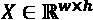和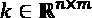，卷积 X * k 定义为(索引从0开始):
很明显，前面的表达式是连续定义的自然衍生。在下图中，有一个3×3内核的示例:
具有3×3内核的二维卷积示例
内核被水平和垂直移动，产生相应元素的逐元素乘法的和。因此，每一次操作都会导致单个像素的输出。示例中使用的内核被称为离散拉普拉斯算子(因为它是通过离散化真实拉普拉斯算子获得的)；让我们观察一下这个内核在一个完整的灰度图上的效果:
与离散拉普拉斯核卷积的例子
正如我们所见，卷积的效果是强调各种形状的边界。读者现在可以看到如何调整可变内核，以满足精确的要求。然而，深度卷积网络不是试图手动完成，而是将这些任务留给学习过程，学习过程服从于表达为成本函数最小化的精确目标。不同过滤器的并行应用产生复杂的重叠，这可以简化对分类真正重要的那些特征的提取。全连接层和卷积层之间的主要区别是后者与现有几何图形一起工作的能力，后者对区分一个对象和另一个对象所需的所有元素进行编码。
这些元素不能被立即概括(想想决策树的分支，其中一个分裂定义了一个通向最终类的精确路径)，但是需要后续的处理步骤来执行必要的消歧。比如考虑到之前的照片；眼睛和鼻子很像。怎么可能把图片分割正确？双重分析提供了答案:细粒度过滤器可以发现细微的差异，最重要的是，真实对象的全局几何基于几乎不变的内部关系。
举个例子(只是为了说教的目的)，眼睛和鼻子应该组成一个等腰三角形，因为脸的对称性意味着每只眼睛和鼻子之间的距离是一样的。
这种考虑可以是先验的，就像在许多视觉处理技术中一样，或者，由于深度学习的力量，它可以留给训练过程。由于成本函数和输出类隐含地控制差异，深度卷积网络可以了解什么是达到特定目标的重要因素，同时丢弃所有无用的细节。
在上一节中，我们已经说过特征提取过程主要是分层的。现在，应该很清楚不同的内核大小和随后的卷积正好实现了这个目标。假设我们有一个100 x 100的图像和一个3 x 3的内核。生成的图像将是98 x 98像素(我们将在后面解释这个概念)。然而，每个像素编码3×3块的信息，并且由于这些块是重叠的，两个连续的像素将共享一些知识，但是同时，它们强调相应块之间的差异。
在下图中，相同的拉普拉斯核应用于黑色背景上的简单白色正方形:
原图(左)；与拉普拉斯核函数的卷积结果(右)
即使图像非常简单，我们也可以看到卷积的结果丰富了输出图像的一些非常重要的信息:正方形的边界现在清晰可见(它们是黑色和白色的)，并且可以通过对图像进行阈值处理立即检测出来。原因很简单:内核对紧凑曲面的影响也很紧凑，但是当内核在边界上移动时，差异的影响变得可见。原始图像中的三个相邻像素可以表示为(0，1，1)，表示黑白之间的水平过渡。
卷积后，结果约为(0.75，0.0，0.25)。所有原来的黑色像素都被转换为浅灰色，白色方块变得更暗，边框(在原图中没有标出)现在是黑色(或白色，取决于移动方向)。将相同的滤波器重新应用于先前卷积的输出，我们得到以下结果:
拉普拉斯核的第二个应用
敏锐的眼睛可以立即注意到三个结果:紧凑的表面(黑色和白色)变得越来越相似，边界仍然可见，最重要的是，左上角和左下角的现在更清楚地标记有白色像素。因此，第二次卷积的结果添加了一条更细粒度的信息，这在原始图像中更难检测。事实上，拉普拉斯算子的效果非常简单，它只对教学有用。在真正的深度卷积网络中，过滤器被训练来执行更复杂的处理操作，这些操作可以揭示不能立即用来对图像进行分类的细节(以及它们的内部和外部关系)。它们的隔离(得益于许多并行过滤器的作用)允许网络以不同的方式标记相似的元素(例如正方形的角)，并做出更准确的决定。
此示例的目的是展示卷积序列如何允许生成分层过程，该过程将在开始时提取粗粒度特征，在结束时提取非常高级的特征，而不会丢失已经收集的信息。打个比方，我们可以说，深度卷积网络开始放置指示线、方向和边界的标签，并通过用进一步的细节(如角和特定形状)丰富现有的本体来继续。由于这种能力，如果训练样本的数量足够大，这种模型可以轻松胜过任何MLP，并且几乎达到贝叶斯水平。这些模型的主要缺点是在应用仿射变换(例如旋转或平移)后，它们不能容易地识别物体。换句话说，如果一个网络是用一个只包含自然位置的人脸的数据集训练的，那么当一个旋转的(或颠倒的)样本出现时，它的性能会很差。在接下来的章节中，我们将讨论几个有助于缓解这个问题的方法(在翻译的情况下)；然而，已经提出了一种称为胶囊网络的新的实验性架构(这超出了本书的范围)，以便用稍微不同并且更加鲁棒的方法来解决这个问题(读者可以在Sabour S .、Frosst N .、Hinton G. E .、胶囊之间的动态路由、arXiv:1710.09829【cs。CV])。
步幅和衬垫
所有卷积共有的两个重要参数是填充和步幅。让我们考虑二维情况，但是记住概念总是相同的。当一个核( n x m 带 n ， m > 1)在图像上移动并到达一个维度的末端时，有两种可能性。第一种称为有效填充，包括即使结果图像比原始图像小也不继续。特别是，如果 X 是一个 w x h 矩阵，那么得到的卷积输出的维数将等于(w–n+1)X(h–m+1)。然而，在许多情况下，保持原始维度是有用的，例如，能够对不同的输出求和。这种方法被称为same padding，它基于一个简单的想法，即添加 n - 1个空白列和 m - 1个空白行，以允许内核在原始图像上移动，产生与初始尺寸相等的像素数量。在许多实现中，默认值被设置为有效填充。
另一个参数称为步幅，定义每次移动时要跳过的像素数。例如，设置为(1，1)的值对应于标准卷积，而下图显示了设置为(2，1)的步长:
x轴上跨距=2的二维卷积示例
在这种情况下，每次水平移动都会跳过一个像素。当不需要高粒度时(例如，在第一层中)，较大的步距强制降维，而在最后一层中通常采用设置为(1，1)的步距来捕捉较小的细节。没有找到最佳值的标准规则，测试不同的配置总是最好的方法。像任何其他超参数一样，正确选择步幅和衬垫需要对整个配置进行全面的评估，不能简单地局限于几个单一的考虑因素。然而，关于数据集的一些常规信息(因此也是关于底层数据生成过程的)可以帮助做出合理的初始决策。例如，如果我们正在处理尺寸是垂直的建筑物的图片，有可能开始选择(1，2)的值，因为我们可以假设在 y 轴上比在 x 轴上有更多的信息冗余。这种选择可以极大地加快训练过程，因为输出是一维的，是原始一维的一半(填充相同)。这样，较大的步幅产生部分去噪，并且可以提高训练速度。同时，信息丢失可能会对准确性产生负面影响。如果发生这种情况，可能意味着规模不够大，无法在不损害语义的情况下跳过一些元素。例如，具有非常小的面部的图像可能在大步长时被不可逆地损坏，导致无法检测到正确的特征，并因此降低分类精度。
阿特鲁卷积
在某些情况下，大于1的步幅可能是一个好的解决方案，因为它减少了维度并加快了训练过程，但它可能导致图像失真，其中主要特征不再可检测。atrous卷积(也称为扩张卷积)提供了一种替代方法。在这种情况下，内核应用于一个更大的图像补丁，但跳过了区域本身内部的一些像素(这就是为什么有人称之为带孔卷积)。在下图中，有一个(3 x 3)和膨胀率设置为2的示例:
具有拉普拉斯核的atrous卷积示例
现在每个面片都是9 x 9，但是内核仍然是3 x 3拉普拉斯算子。这种方法的效果比增加步幅更健壮，因为内核周界将总是包含一组具有相同几何关系的像素。当然，细粒度的特征可能会被扭曲，但是因为步幅通常被设置为(1，1)，所以最终的结果通常更加一致。与标准卷积的主要区别在于，在这种情况下，我们假设可以考虑更远的元素来确定输出像素的性质。例如，如果主要特征不包含非常小的细节，atrous卷积可以考虑更大的区域，直接关注标准卷积仅在几次运算后才能检测到的元素。这种技术的选择必须考虑到最终的精度，但是就像对于步幅一样，只要可以更有效地检测几何属性，就可以从一开始就考虑这种技术，考虑具有几个代表性元素的较大面片。
即使这种方法在特定的环境中非常有效，它通常也不是非常深的模型的首选。在最重要的图像分类模型中，采用标准卷积(有或没有更大的步幅),因为它们已经被证明可以对非常普通的数据集(如ImageNet或Microsoft Coco)产生最佳性能。不过，我建议读者用这个方法进行实验并比较结果。特别是，分析哪些类被更好地分类并尝试为观察到的行为找到合理的解释将是一个好主意。
在某些框架中，如Keras，没有明确的层来定义atrous卷积。相反，标准卷积层通常有一个参数来定义膨胀率(在TensorFlow/Keras中，它被称为dilation_rate)。当然，默认值是1，这意味着内核将被应用到与其大小相匹配的补丁上。
可分离卷积
如果我们考虑一个图像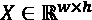(单通道)和一个内核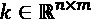，运算次数就是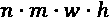。当内核不是很小，图像很大的时候，这个计算的代价可能会相当高，即使有GPU支持。通过考虑卷积的相关属性，可以实现一个改进。特别地，如果原核可以拆分为两个向量核的点积，维数为( n x 1)的 k (1) 和维数为(1 x m 的 k (2) ，则称卷积可分。这意味着我们可以用两个后续操作执行( n x m )卷积:
优势很明显，因为现在操作数是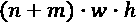。特别是，当nm>>n+m时，可以避免大量的乘法运算，从而加快训练和预测过程。
在Chollet F .，exception:具有深度方向可分离卷积的深度学习，arXiv:1610.02357【cs。简历】。在这种情况下，它被恰当地称为深度方向可分离卷积，该过程被分成两个步骤。
第一个沿着通道轴操作，将其转换为通道数可变的一维图(例如，如果原图为768 x 1024 x 3，则第一阶段的输出将为 n x 768 x 1024 x 1)。然后，对单层应用标准卷积(实际上可以有多个通道)。在大多数实现中，深度方向卷积的默认输出通道数是1(这通常通过说深度乘数是1来表示)。相对于标准卷积，这种方法可以显著降低参数。事实上，如果输入的通用特征映射是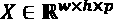，并且我们想要与 q 核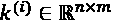执行标准卷积，我们需要学习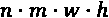参数(每个核 k (i) 应用于所有输入通道)。采用深度方向可分离卷积，第一步(仅处理通道)需要 nmp 参数。由于输出仍然有 p 个特征图，我们需要输出 q 个通道，这个过程使用了一个技巧:用 q 1 x 1个内核处理每个特征图(这样，输出将有 q 个层和相同的尺寸)。第二步需要的参数个数是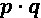，所以参数总数变成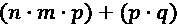。将该值与标准卷积所需的值进行比较，我们得到了一个有趣的结果:
因为这个条件很容易成立，所以这种方法在优化训练和预测过程以及任何情况下的内存消耗方面非常有效。不足为奇的是，Xception模型已经立即在移动设备中实现，允许用非常有限的资源进行实时图像分类。当然，深度方向可分离卷积并不总是具有与标准卷积相同的精度，因为它们基于复合特征图的通道内可观察到的几何特征相互独立的假设。这并不总是正确的，因为我们知道多个层的效果也是基于它们的组合(这增加了网络的表现力)。然而，在许多情况下，最终结果的精确度可以与一些最先进的模型相媲美；因此，这种技术通常被认为是标准卷积的有效替代方法。
从版本2.1.5开始，Keras引入了一个名为DepthwiseConv2D的层，实现深度方向可分离卷积。该层扩展了现有的SeparableConv2D。
转置卷积
转置卷积(有时也称为去卷积，即使数学定义不同)与标准卷积没有太大区别，但其目标是重建一个与输入样本具有相同特征的结构。假设一个卷积网络的输出是特征图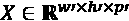，我们需要建立一个输出元素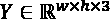(假设w和h是原始维数)。我们可以通过对 X 应用具有适当步长和填充的转置卷积来实现这个结果。比如我们假设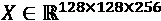和我们的输出一定是512 x 512 x 3。最后一个转置卷积必须学习三个滤波器，步长设置为四，填充相同。我们将在下一章看到这种方法的一些实际例子。然而，就内部动力学而言，转置和标准卷积之间没有非常重要的区别。主要区别是成本函数，因为当转置卷积用作最后一层时，必须在目标图像和重建图像之间进行比较。在下一章中，我们还将分析一些技术来提高输出的质量，即使成本函数并不关注图像的特定区域。
汇集图层
在深度卷积网络中，池层是极其有用的元素。这些结构主要有两种:最大池和平均池。它们都处理面片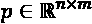，根据预定义的步幅值水平和垂直移动，并根据以下规则将面片转换为单个像素:
使用这些层有两个主要原因。第一个是有限信息损失的维数减少(例如，如果我们将步距设置为(2，2)，则有可能将图像/特征图的维数减半)。显然，池技术可能或多或少有损失(特别是最大池)，具体结果取决于单个图像。
一般来说，池层试图将包含在一个小块中的信息总结成单个像素。这一想法得到了一种以感知为导向的方法的支持；事实上，当池不是很大时，在随后的移动中不太可能发现高变化(自然图像具有很少的孤立像素)。因此，所有的池化操作都允许我们设置一个以上的步长，降低了损害信息内容的风险。然而，考虑到几个实验和架构，我建议您在卷积层(特别是卷积序列的第一层)中设置更大的步幅，而不是在汇集层中。这样，就有可能以最小的损失应用变换，并充分利用下一个基本属性。
第二个(也可能是最重要的)原因是，它们略微增加了对转换的鲁棒性，并限制了失真，其效果与池大小成比例。让我们考虑下面的图表，代表一个十字架的原始图像和10像素对角线平移后的版本
原图(左)；对角转换的图像(右)
这是一个非常简单的例子，翻译出来的图像和原图差别不大。然而，在更复杂的情况下，分类器可能无法在相似的条件下正确地对对象进行分类。
对翻译后的图像应用最大池(池大小为2 x 2，步长为2像素)(而左边的图像始终是原始图像，代表我们的基准)，我们得到以下结果:
原图(左)；翻译图像的最大池化结果(右)
读者必须注意，池缩小了图像的大小(例如，在我们的例子中，一个(2 x 2)池将两个维度减半)，但我们更喜欢采用相同的比例，以获得更好的视觉比较。结果是一个更大的十字架，它的两臂与轴线稍微对齐。当与原始图像比较时，具有良好泛化能力的分类器更容易过滤掉乱真元素并识别原始形状(可以认为是被噪声帧包围的十字)。用平均池(相同的参数)重复相同的实验，我们得到以下结果:
原图(左)；翻译图像的平均汇集结果(右)
在这种情况下，图片被部分平滑，但仍然有可能看到更好的对齐(主要归功于褪色效果)。此外，如果这些方法简单并且有些有效，那么对不变变换的鲁棒性永远不会显著提高，并且只有通过增加池大小才有可能实现更高级别的不变性。这种选择导致粗粒度特征地图的信息量急剧减少；因此，每当有必要将分类扩展到可能被扭曲或旋转的样本时，使用数据扩充技术来生成人工图像并在其上训练分类器可能是一个好主意(这允许使用更好地表示真实数据生成过程的数据集)。
然而，正如Goodfellow I .、Bengio Y .、库维尔a .、深度学习(麻省理工学院出版社，2015年)中所指出的，当池图层与多重卷积图层或旋转图像堆栈的输出一起使用时，它们也可以提供对旋转的稳健不变性。事实上，在这些情况下，会引发单一模式响应，并且池层的效果变得类似于标准化输出的收集器。换句话说，在没有明确选择最佳匹配模式的情况下，它将产生相同的结果。因此，如果数据集包含足够多的样本，在网络的中间位置汇集图层可以为小旋转提供适度的鲁棒性，从而提高整个深度架构的泛化能力。
正如在前面的例子中很容易看到的，两种变体之间的主要区别是最终结果。平均池执行一种非常简单的插值，平滑边界并避免突然变化。另一方面，当需要检测特征而不进行任何类型的平滑(这可能会改变它们的几何形状)时，最大池噪声更少，并且可以产生更好的结果。我总是建议测试这两种技术，因为仅根据启发式考虑(尤其是当数据集不是由非常简单的图像组成时)，几乎不可能选择具有正确池大小的最佳方法。
显然，在一组卷积后使用这些层总是更可取的，这样可以避免非常大的池大小，因为这可能会不可逆转地破坏信息内容。在许多重要的深层架构中，池层总是基于(2，2)或(3，3)池，与其位置无关，并且跨度总是设置为1或2。在这两种情况下，信息损失与池大小/跨度成比例；因此，当小特征必须与较大特征(例如，前景和背景人脸)一起检测时，通常避免大池。
其他有用层
即使卷积和池层是几乎所有深度卷积网络的主干，其他层也有助于管理特定情况。
它们是以下几种:
- 填充层:这些可以被用来增加一个特征地图的大小(例如，通过用一个空白框包围它(在每边的前后添加 n 个黑色像素)来使它与另一个特征地图对齐)。有关Keras/TensorFlow实现的信息，请参见https://keras.io/layers/convolutional/。
- 上采样层:通过从单个像素创建更大的块来增加特征图的大小。在某种程度上，它们可以被视为与池化图层相反的变换，即使在这种情况下，上采样并不基于任何类型的插值。这些类型的层可用于为类似于用转置卷积获得的变换准备特征图，即使许多实验证实使用更大的步长可产生非常精确的结果而不需要额外的计算步骤。
- 裁剪图层:这有助于选择图像/特征地图的特定矩形区域。它们在模块化架构中特别有用，其中第一部分确定裁剪边界(例如，一张脸)，而第二部分在移除背景后，可以执行高级操作，如细节分割(标记眼睛、鼻子、嘴等区域)。将这些层直接插入深度神经模型的可能性避免了多次数据传输。不幸的是，许多框架(如TensorFlow/Keras)不允许我们使用可变边界，实际上限制了可能的用例数量。
- 扁平化图层:这些是要素地图和全连接图层之间的连接链接。通常，在处理卷积块的输出之前使用单个展平层，少数密集层终止于最终的Softmax层(用于分类)。该操作在计算上非常便宜，因为它只处理元数据，不执行任何计算。
具有TensorFlow和Keras的深度卷积网络示例
在第一个例子中，我们希望再次考虑完整的MNIST手写数字数据集，但是我们将使用小型深度卷积网络，而不是使用MLP。第一步包括加载和标准化数据集:
import tensorflow as tf
import numpy as np
(X_train, Y_train), (X_test, Y_test) = \
tf.keras.datasets.mnist.load_data()
width = height = X_train.shape[1]
X_train = X_train.reshape(
(X_train.shape[0], width, height, 1)).\
astype(np.float32) / 255.0
X_test = X_test.reshape(
(X_test.shape[0], width, height, 1)).\
astype(np.float32) / 255.0
Y_train = tf.keras.utils.to_categorical(
Y_train, num_classes=10)
Y_test = tf.keras.utils.to_categorical(
Y_test, num_classes=10)
我们现在可以定义模型架构了。数据点非常小(28 × 28)，因此使用小内核可能会有所帮助。这不是一个通用的规则，它对于评估更大的内核(特别是在第一层)也是有用的；然而，许多最先进的架构证实了使用小映像的大内核会导致性能损失。在我们的个人实验中，当最大的核比图像尺寸小8到10倍时，我们总是获得最佳结果(例如，如果图像是100 x 100，最大的核应该小于10 x 10，即使在许多情况下，起始大小甚至更小，如5 x 5)。
我们的模型由以下几层组成:
- 输入压差为25%，以防止过拟合。
- 与16个滤波器卷积，(3 × 3)内核，步长等于1，ReLU激活，相同的填充(默认权重初始值为Xavier)。TensorFlow/Keras实现了Conv2D类，它的主要参数很容易理解。
- 退学50%。
- 与32个滤波器卷积，(3 × 3)内核，步长等于1，ReLU激活，以及相同的填充。
- 退学50%。
- (2 × 2)池大小和步长等于1的平均池(使用TensorFlow/Keras类
AveragePooling2D)。 - 与64个滤波器卷积，(3 × 3)内核，步长等于1，ReLU激活，以及相同的填充。
- (2 × 2)池大小和步长等于1的平均池。
- 与64个滤波器卷积，(3 × 3)内核，步长等于1，ReLU激活，以及相同的填充。
- 退学50%。
- (2 × 2)池大小和步长等于1的平均池。
- 展平图层。
- 具有1，024个ReLU单元的全连接层。
- 退学50%。
- 具有10个Softmax单元的全连接层。
目标是捕获第一层中的低级特征(水平线和垂直线、交叉点等)，并使用汇集层和所有后续卷积来提高呈现失真样本时的准确性。考虑到模型的容量，引入缺失层(或者， L 2 正则化)有助于防止过拟合。在这种情况和类似情况下，辍学的影响是双重的。事实上，正如Goodfellow等人(在Goodfellow I .，Bengio Y .，库维尔a .，深度学习，麻省理工学院出版社，2015年)和在上一章中解释的那样，dropout也有能力将单个模型转化为受约束的bagging系综(有关进一步的详细信息，请阅读第9章， 广义线性模型和回归)。
通过在批处理过程中关闭随机单元的激活，全局模型被分割成大量独立的子模型，这些子模型专门用于对特定样本进行分类。因此，dropout通过利用模型的所有容量来覆盖整个样本空间，而不会过度学习训练集的详细结构，从而避免了过度拟合。每一个子模型都被随机抽样小批量，并被迫修改权重以最小化全局成本函数。然而，对于激活已经被置零的单元，校正变得无效，因此，模型的一部分保持不变，而单元的子集经历更新。这个过程避免了全局模型的过度专门化，同时，通过采用类似于bagging的策略(除了子模型相互依赖的事实之外)，提高了分类器的性能。
此时，我们可以创建并编译模型(使用Adam优化器，其中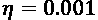和衰减率等于10 -5 ):
model = tf.keras.models.Sequential([
tf.keras.layers.Dropout(0.25,
input_shape=(width, height, 1),
seed=1000),
tf.keras.layers.Conv2D(16,
kernel_size=(3, 3),
padding='same',
activation='relu'),
tf.keras.layers.Dropout(0.5, seed=1000),
tf.keras.layers.Conv2D(32,
kernel_size=(3, 3),
padding='same',
activation='relu'),
tf.keras.layers.Dropout(0.5, seed=1000),
tf.keras.layers.AveragePooling2D(
pool_size=(2, 2),
padding='same'),
tf.keras.layers.Conv2D(64,
kernel_size=(3, 3),
padding='same',
activation='relu'),
tf.keras.layers.AveragePooling2D(
pool_size=(2, 2),
padding='same'),
tf.keras.layers.Conv2D(64,
kernel_size=(3, 3),
padding='same',
activation='relu'),
tf.keras.layers.Dropout(0.5, seed=1000),
tf.keras.layers.AveragePooling2D(
pool_size=(2, 2),
padding='same'),
tf.keras.layers.Flatten(),
tf.keras.layers.Dense(1024,
activation='relu'),
tf.keras.layers.Dropout(0.5, seed=1000),
tf.keras.layers.Dense(10,
activation='softmax')
])
最佳批量的选择几乎从不基于标准化标准，而是基于实际考虑。原因是很难预测具有不同批量大小的深度模型的行为。然而，一些一般的考虑是可能的。随机梯度下降是一种近似的算法，它是从梯度下降中派生出来的。在后一种情况下，整个训练集在任何改变之前被处理。因此，较大的批次通常(但不总是)提高梯度估计的准确性，因为它们比较小的批次提供更多的信息，从而避免进一步的校正。另一方面，较小的批处理更适合内存(特别是在使用GPU时)，加上合理的小学习率，在收敛速度和硬件要求之间提供了一个完美的平衡。不幸的是，批量大小的选择没有黄金法则(可能除了与2的幂成比例，因为它更适合GPU的VRAM)，所以我邀请读者从最大可能的值(例如，与训练集的大约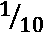成比例)开始，并将其减少到训练集的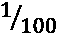到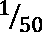之间的某个大小，直到性能令人满意。值得一提的是最近的研究(Masters D .，Luschi C .，再谈深度神经网络的小批量训练，arXiv:1804.07612【cs。LG])表明，平均而言，小批量是优选的。特别是，作者证明了批量大小的逐渐增加，以及学习速率的正常衰减保证了更好的收敛速度和性能。不幸的是，这些建议往往是宝贵的，但它们很少具有普遍适用性。一些数据集(和神经架构)可能会受益，而另一些可能会表现得更差。因此，解决该问题的最佳方式必然是尝试和评估，可能遵循最常见的准则以避免已知错误。不言而喻，批量大小只是深度学习任务期间必须调整的超参数之一；因此，最优选择并不独立于其他值。正如许多研究人员所建议的，彻底的网格搜索是不可能的，因此他们建议从参数空间随机采样(给定精确的架构)，并通过放大性能更好的区域来进行。该过程可以继续，直到结果满足预期的要求。然而，如果这种改善可以忽略不计，那么最好对另一个随机区域进行采样，而不是不断放大到同一个子空间。
我们现在可以使用200个历元和256个数据点的批量大小来训练模型，这是一个在性能和计算成本之间提供良好平衡的值:
model.compile(optimizer=
tf.keras.optimizers.Adam(lr=0.001, decay=1e-5),
loss='categorical_crossentropy',
metrics=['accuracy'])
history = model.fit(X_train, Y_train,
epochs=200,
batch_size=256,
validation_data=(X_test, Y_test))
前面代码片段的输出是:
Train on 60000 samples, validate on 10000 samples Epoch 1/200 60000/60000 [==============================] - 15s 257us/sample - loss: 0.4680 - accuracy: 0.8459 - val_loss: 0.1048 - val_accuracy: 0.9688 Epoch 2/200 60000/60000 [==============================] - 8s 127us/sample - loss: 0.1470 - accuracy: 0.9531 - val_loss: 0.0760 - val_accuracy: 0.9802 … Epoch 199/200 60000/60000 [==============================] - 22s 370us/sample - loss: 0.0086 - accuracy: 0.9972 - val_loss: 0.0240 - val_accuracy: 0.9918 Epoch 200/200 60000/60000 [==============================] - 18s 297us/sample - loss: 0.0082 - accuracy: 0.9972 - val_loss: 0.0172 - val_accuracy: 0.9941
最终的验证准确度现在是0.9940，这意味着只有大约50个样本(10，000个中的)被错误分类。为了更好地理解这种行为，我们可以绘制精度图和损耗图:

准确度图(左)；损失函数图(右)
正如我们所看到的，验证准确性和损失都很容易达到最佳值。特别是，初始验证精度约为0.97，需要剩余的历元来提高形状可能导致混淆的所有样本的性能(例如，类似于0的畸形8，或非常类似于1的7)。
很明显，卷积采用的几何方法保证了比标准全连接网络更强的鲁棒性，这也要归功于池层的贡献，它减少了由噪声样本引起的差异。
具有TensorFlow/Keras和数据增强的深度卷积网络示例
在这个例子中，我们将使用时尚MNIST数据集，它是由Zalando免费提供的作为标准MNIST数据集的更困难的替代。在这种情况下，不同服装的微缩灰度照片取代了手写数字。下面的屏幕截图显示了一些图像的示例:
从时尚MNIST数据集中采样的图像示例
然而，在这种情况下，我们希望使用TensorFlow/Keras ( ImageDataGenerator)提供的实用程序类来创建数据扩充样本集，以提高深度卷积网络的泛化能力。这个类允许我们添加随机变换(如标准化、旋转、移动、翻转、缩放和剪切)并使用Python生成器(无限循环)输出样本。让我们开始加载数据集(我们不需要标准化它，因为这个转换是由生成器执行的):
import tensorflow as tf
nb_classes = 10
train_batch_size = 256
test_batch_size = 100
nb_epochs = 100
steps_per_epoch = 1500
(X_train, Y_train), (X_test, Y_test) = \
tf.keras.datasets.fashion_mnist.load_data()
此时，我们可以创建生成器，选择最适合我们情况的转换。由于数据集相当标准(所有样本仅在少数位置表示)，我们决定通过应用样本标准化(不依赖于整个数据集)、水平翻转、缩放、小旋转和小剪切来扩充数据集。
这一选择是根据客观分析做出的，但我建议读者用不同的参数重复实验(例如，添加白化、垂直翻转、水平/垂直移动和扩展旋转)。当然，增加增强可变性需要更大的处理集。在我们的例子中，我们将使用384，000个训练样本(原始大小为60，000)，但是可以使用更大的值来训练更深的网络:
import numpy as np
train_idg = tf.keras.preprocessing.image.\
ImageDataGenerator(
rescale=1.0 / 255.0,
samplewise_center=True,
samplewise_std_normalization=True,
horizontal_flip=True,
rotation_range=10.0,
shear_range=np.pi / 12.0,
zoom_range=0.25)
train_dg = train_idg.flow(
x=np.expand_dims(X_train, axis=3),
y=tf.keras.utils.to_categorical(
Y_train, num_classes=nb_classes),
batch_size=train_batch_size,
shuffle=True,
seed=1000)
test_idg = tf.keras.preprocessing.image.\
ImageDataGenerator(
rescale=1.0 / 255.0,
samplewise_center=True,
samplewise_std_normalization=True)
test_dg = train_idg.flow(
x=np.expand_dims(X_test, axis=3),
y=tf.keras.utils.to_categorical(
Y_test, num_classes=nb_classes),
shuffle=False,
batch_size=test_batch_size,
seed=1000)
一旦初始化了图像数据生成器，就必须安装它，指定输入数据集和所需的批量大小(该操作的输出是实际的Python生成器)。除了标准化和规范化之外，测试图像生成器自愿保持不进行转换，以避免对来自不同分布的数据集进行验证。此时，我们可以使用基于泄漏ReLU激活的2D卷积来创建和编译我们的网络(以提高在值略低于零时执行校正的能力，此时ReLU梯度为零)、批量归一化和最大池化:
model = tf.keras.models.Sequential([
tf.keras.layers.Conv2D(32,
kernel_size=(3, 3),
padding='same',
input_shape=(X_train.shape[1],
X_train.shape[2], 1)),
tf.keras.layers.BatchNormalization(),
tf.keras.layers.LeakyReLU(alpha=0.1),
tf.keras.layers.Conv2D(64,
kernel_size=(3, 3),
padding='same'),
tf.keras.layers.BatchNormalization(),
tf.keras.layers.LeakyReLU(alpha=0.1),
tf.keras.layers.Conv2D(128,
kernel_size=(3, 3),
padding='same'),
tf.keras.layers.BatchNormalization(),
tf.keras.layers.LeakyReLU(alpha=0.1),
tf.keras.layers.Conv2D(128,
kernel_size=(3, 3),
padding='same'),
tf.keras.layers.BatchNormalization(),
tf.keras.layers.LeakyReLU(alpha=0.1),
tf.keras.layers.MaxPooling2D(pool_size=(2, 2)),
tf.keras.layers.Flatten(),
tf.keras.layers.Dense(1024),
tf.keras.layers.BatchNormalization(),
tf.keras.layers.LeakyReLU(alpha=0.1),
tf.keras.layers.Dense(1024),
tf.keras.layers.BatchNormalization(),
tf.keras.layers.LeakyReLU(alpha=0.1),
tf.keras.layers.Dense(nb_classes,
activation='softmax')
])
model.compile(loss='categorical_crossentropy',
optimizer=tf.keras.optimizers.Adam(
lr=0.0001, decay=1e-5),
metrics=['accuracy'])
在激活函数之前，所有的批量归一化总是应用于线性变换。考虑到额外的复杂性，我们还将使用回调，这是TensorFlow/Keras为了执行训练操作而使用的类。在我们的例子中，当验证损失停止改善时，我们希望降低学习率。特定的回调被称为ReduceLROnPlateau，它被调整以通过将它乘以0.1(在等于耐心参数值的时期数之后)来减少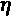，冷却期(在恢复原始学习率之前等待的时期数)为1个时期，最小值为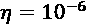。
训练方法现在是fit_generator()，它接受Python生成器而不是有限数据集和每个历元的迭代次数(所有其他参数与fit()实现的相同)。在开始之前，重要的是要记住，这个模型比前一个模型更复杂，训练过程可能会在较慢的GPU上持续几个小时:
history = model.fit_generator(
generator=train_dg,
epochs=nb_epochs,
steps_per_epoch=steps_per_epoch,
validation_data=test_dg,
validation_steps=int(X_test.shape[0] /
test_batch_size),
callbacks=[
tf.keras.callbacks.ReduceLROnPlateau(
factor=0.1, patience=1,
cooldown=1, min_lr=1e-6)
])
前面代码片段的输出是:
Epoch 1/100 1500/1500 [==============================] - 471s 314ms/step - loss: 0.3457 - acc: 0.8722 - val_loss: 0.2863 - val_acc: 0.8952 Epoch 2/100 1500/1500 [==============================] - 464s 309ms/step - loss: 0.2325 - acc: 0.9138 - val_loss: 0.2721 - val_acc: 0.8990 Epoch 3/100 1500/1500 [==============================] - 460s 307ms/step - loss: 0.1929 - acc: 0.9285 - val_loss: 0.2522 - val_acc: 0.9112 … Epoch 99/100 1500/1500 [==============================] - 449s 299ms/step - loss: 0.0438 - acc: 0.9859 - val_loss: 0.2142 - val_acc: 0.9323 Epoch 100/100 1500/1500 [==============================] - 449s 299ms/step - loss: 0.0443 - acc: 0.9857 - val_loss: 0.2136 - val_acc: 0.9339
在这种情况下，复杂性更大，并且结果不如使用标准MNIST数据集获得的结果准确。下图显示了验证和损失图:
准确度图(左)；损失函数图(右)
损失图没有显示出 U型曲线，但似乎从第20纪元开始就没有真正的改善。验证图也证实了这一点，验证图在0.935和0.94之间波动。另一方面，训练损失还没有达到最小值(训练精度也没有)，主要是因为批量标准化(如前一章所述，为了实现完全无偏性，必须有非常大的批量)。
当这个条件不能完全满足时，结果一般会稍有偏差，但具有相当快的收敛速度)。不过考虑到几个基准，结果还不错(即使最先进的模型也能达到0.96左右的验证精度)。我建议读者基于具有更大训练集的更深层次架构尝试不同的配置(有和没有退出和其他激活)。这个的例子提供了许多的机会来实践这种模型，因为其复杂性并不像需要专用硬件那么大，但同时，有许多歧义(例如，衬衫和t恤之间的歧义)会降低泛化能力。
总结
在这一章中，我们提出了深度卷积网络的概念，这是一种通用的架构，可以在任何视觉处理任务中使用。这种想法基于分层信息管理，旨在从低级元素开始提取特征，并向前移动到有助于实现特定目标的高级细节。
我们讨论了卷积的概念及其在离散和有限样本中的应用。接下来，我们定义了标准卷积的性质，然后分析了一些重要的变体，如无序(或扩张)卷积、可分离(和深度方向可分离)卷积，最后是转置卷积。所有这些方法都可以用于1D、2D和3D样本，即使最广泛的应用是基于表示静态图像的二维(不考虑通道)矩阵。在同一节中，我们还讨论了如何使用池层来减少维度并提高对小平移的鲁棒性。
在下一章中，我们将讨论递归神经网络，它允许我们以比使用标准时间序列分析算法可获得的精确度高得多的精确度来模拟时间序列。
延伸阅读
- 斯通J. V .，视觉和大脑:我们如何感知世界，麻省理工学院出版社，2012年
- Holdroyd T .， TensorFlow 2.0快速入门指南，Packt出版，2019
- Sabour S .，Frosst N .， Hinton G. E .，胶囊间动态路由，arXiv:1710.09829【cs。简历]
- Chollet F .，例外:深度可分卷积深度学习，arXiv:1610.02357【cs。简历]
- Goodfellow I .，Bengio Y .，库维尔a .，深度学习，麻省理工学院出版社，2015年
- Zipser D .，神经信息处理系统的进展，II，1990年
- Masters D .，Luschi C .，再谈深度神经网络的小批量训练，arXiv:1804.07612【cs .LG]